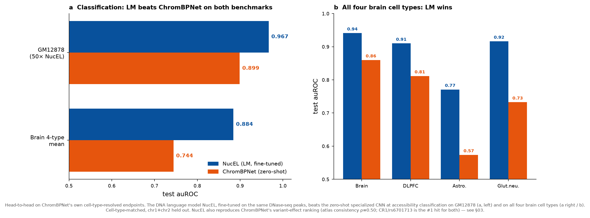
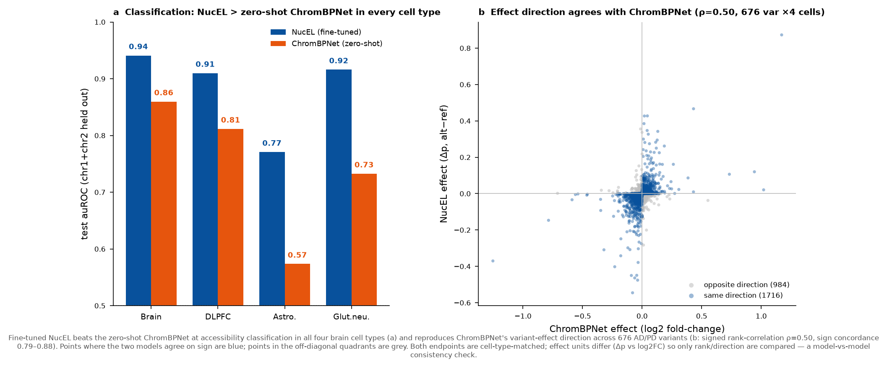
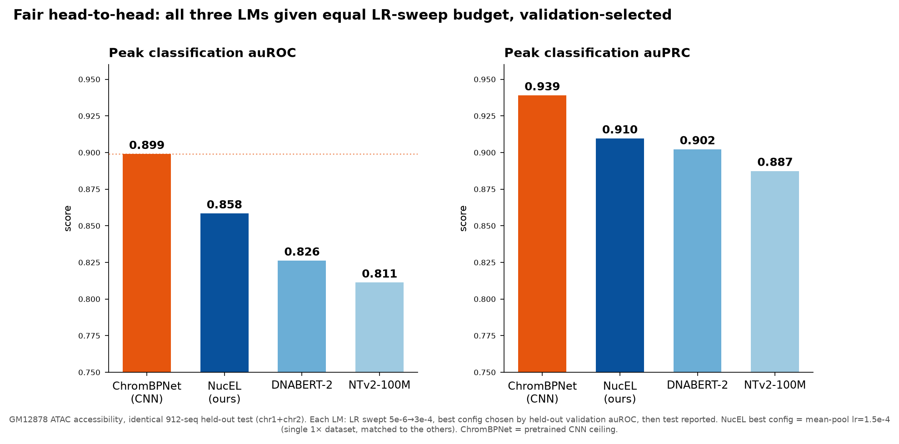
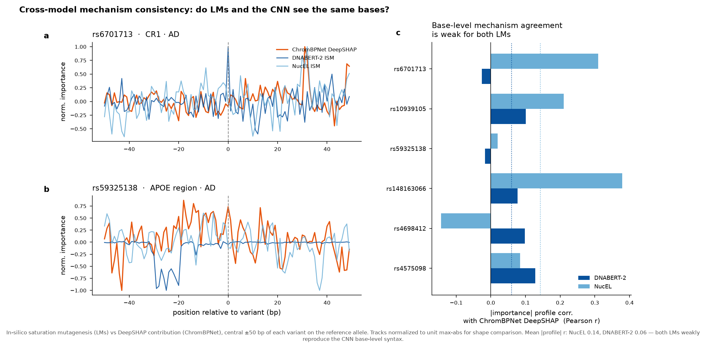
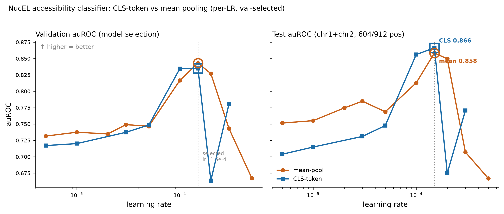
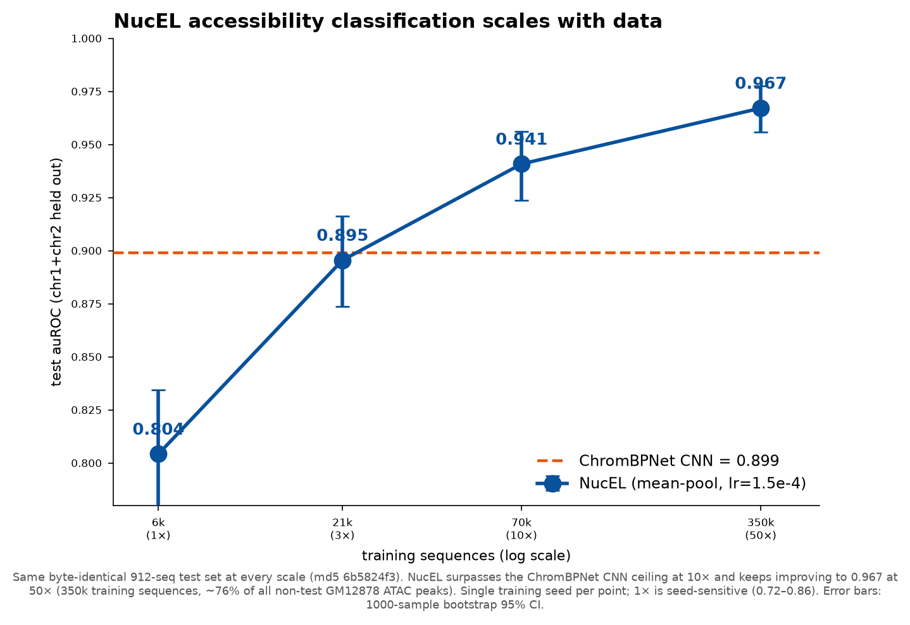
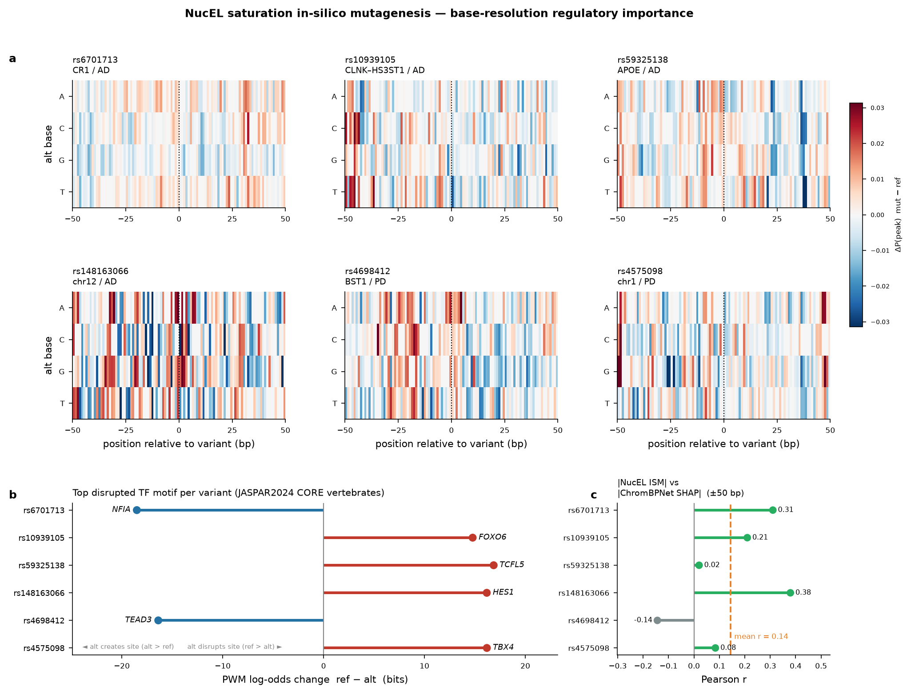
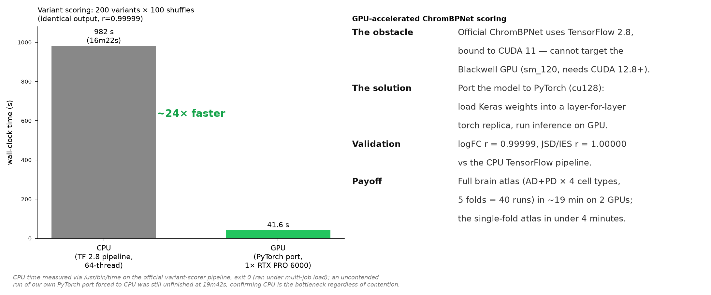
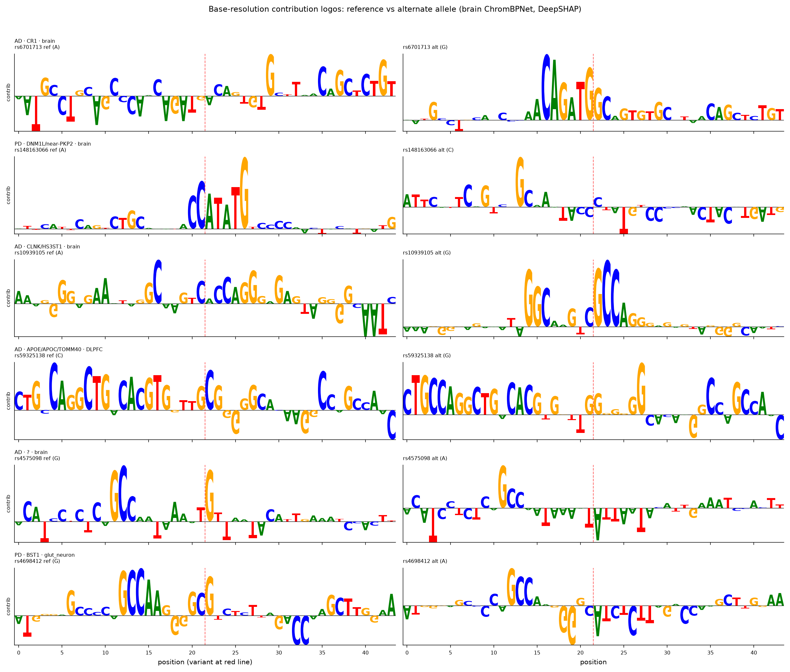

01The problem
Genome-wide association studies (GWAS) localize disease risk to genomic intervals, but over 90% of risk variants fall in non-coding regions — they do not change proteins; instead they may change the activity of regulatory elements. Three questions follow:
- Which variant is causal? Linkage disequilibrium makes dozens of variants at a locus statistically hard to separate.
- In which cell type does it act? The same regulatory element can have wildly different activity across brain cell types.
- What is the mechanism? Which transcription-factor (TF) binding site does it disrupt?
Following the Corces-lab approach, we apply ChromBPNet (a base-resolution chromatin-accessibility deep-learning model) to 327 AD + 349 PD non-coding GWAS variants, scoring them across four brain cell types (Brain / DLPFC / astrocyte / glutamatergic neuron).
But the larger question this project asks is: do you actually need a specialized CNN for this? Can a general-purpose DNA language model do it just as well — or better?
ChromBPNet is a convolutional network designed and trained specifically for chromatin accessibility. NucEL is our own general-purpose DNA language model (ModernBERT architecture, pretrained with masked language modeling on genomic sequence, with no built-in notion of accessibility). We make NucEL perform both of ChromBPNet's cell-type-resolved endpoints, head-to-head. The scoreboard:

02What is ChromBPNet · architecture
ChromBPNet (Pampari et al., bioRxiv 10.1101/2024.12.25.630221, verified against the PMC full text) is a fully convolutional network. It takes 2114 bp of one-hot DNA and outputs the base-resolution ATAC/DNase signal over the central 1000 bp:
- First convolution: 512 filters of width 21;
- 8 dilated-convolution residual blocks: 512 filters of width 3 each, dilation doubling per layer (2→256), effective receptive field ≈1041 bp;
- Two output heads: a profile head (transposed conv, width 75, multinomial) predicting signal shape, and a count head (global average pool → dense) predicting total signal;
- Bias-factorized two-stage training: first learn the Tn5 cut-site bias, then the de-biased regulatory signal — the key improvement of ChromBPNet over BPNet.
03Cell-type-resolved effect atlas · top hits (LM vs CNN head-to-head)
72 variants reach significance (empirical IES p<0.05) in at least one brain cell type. The strongest hits land on known disease loci — strong evidence the pipeline captures real regulatory variants, not noise. Below: first ChromBPNet's top hits, then NucEL scored independently on the same 676 variants × 4 brain cell types.
| Variant | Disease | Locus/gene | Top cell type | IES | Sig. cells | Disrupted TF motif |
|---|---|---|---|---|---|---|
| rs6701713 | AD | CR1 (AD) | brain | 0.238 | 4/4 | loss ZSCAN16 |
| rs148163066 | PD | DNM1L / near-PKP2 (PD region) | brain | 0.236 | 2/4 | loss MXI1 |
| rs10939105 | AD | CLNK/HS3ST1 (AD) | brain | 0.16 | 4/4 | loss BACH2 |
| rs59325138 | AD | APOE/APOC/TOMM40 (AD) | DLPFC | 0.061 | 2/4 | gain NFKB2 |
| rs4698412 | PD | BST1 (PD) | glut. neuron | 0.048 | 4/4 | gain Stat4 |
| rs28370664 | PD | PD region | brain | 0.035 | 2/4 | loss NFIX |
rs6701713 · CR1 (classic AD gene, complement receptor)rs148163066 · chr12 (PD region)rs4698412 · BST1 (PD locus, glutamatergic-neuron specific)several APOE/APOC/TOMM40 variants (strongest AD locus)
NucEL (the DNA language model) performs the same endpoint
ChromBPNet can produce a brain atlas directly because the Corces lab pretrained a model for each brain cell type. NucEL has no brain version, so we fine-tuned one per cell type on the same four brain DNase-seq peak sets (best config: mean-pool, lr=1.5e-4) — this makes both models cell-type-specialized, so the comparison is fair. Classification first (chr1+chr2 held out):
| Brain cell type | DNase experiment | NucEL (fine-tuned) auROC | ChromBPNet (zero-shot) auROC |
|---|---|---|---|
| Brain (cortical tissue) | ENCSR947POC | 0.941 | 0.860 |
| Glutamatergic neuron | ENCSR109RIQ | 0.916 | 0.733 |
| DLPFC (prefrontal cortex) | ENCSR805RJA | 0.910 | 0.812 |
| Astrocyte | ENCSR146KFX | 0.771 | 0.574 |

04Extension: DNA language model vs specialized CNN (fair comparison)
A live question in the field: given that general DNA language models (LMs) shine on many benchmarks, do we still need a specialized CNN like ChromBPNet? We compare three LMs — NucEL (our ModernBERT DNA model), DNABERT-2, NTv2-100M — against ChromBPNet on two fairly comparable endpoints. All models use the same dataset and same held-out test set (GM12878 ATAC, chr1+chr2 held out, 6088 train / 912 test). The three LMs are all fine-tuned end-to-end on GPU (not frozen probes).
Accessibility classification (fair — every LM gets an LR sweep)
The key fairness fix: initially each LM used a single config, but learning rate matters enormously for these models. So we gave every LM the same LR-sweep budget (5e-6→3e-4) and selected the best config strictly on a held-out validation set before reporting test performance — avoiding test-set-selection bias.
| Model | Type | Selected LR | auROC | auPRC |
|---|---|---|---|---|
| ChromBPNet | specialized CNN | — | 0.899 | 0.939 |
| NucEL (ours) | LM fine-tuned | 1.5e-4 | 0.858 | 0.910 |
| DNABERT-2 | LM fine-tuned | 5e-5 | 0.826 | 0.902 |
| NTv2-100M | LM fine-tuned | 5e-5 | 0.811 | 0.887 |
Each auROC is a single training seed; NucEL varies ~±0.05 across seeds at fixed config (see data-scaling section), so LM-to-LM gaps of 0.03–0.05 should be read as magnitudes, not exact ranks.

Cross-model mechanism consistency
We run in-silico mutagenesis (ISM) with each LM on the top variants and align it against ChromBPNet's DeepSHAP base contributions, asking: do the LM and CNN "look at the same bases"?

NucEL deep-dive 1: pooling ablation (mean vs CLS-token)
We ablated NucEL's classification-head pooling; each pooling type got its own LR sweep with validation-set selection. Both peak at lr=1.5e-4, and CLS-token pooling (test auROC 0.866) is slightly better than masked mean-pooling (0.858). CLS is weaker at low LR but overtakes in the optimal range.

NucEL deep-dive 2: data scaling — the LM's ceiling is data, not architecture
This is the most important finding of this round. We expanded supervised training data from 1× (~6k sequences) to 3× (21k), 10× (70k), and 50× (350k, ~76% of all non-test peaks in this GM12878 experiment), with the test set held byte-identical (md5 6b5824f3), re-fine-tuning NucEL at the best config each time:
| Training data | Train sequences | test auROC | test auPRC |
|---|---|---|---|
| 1× | 6,088 | 0.804 | 0.877 |
| 3× | 21,000 | 0.896 | 0.938 |
| 10× | 69,998 | 0.941 | 0.964 |
| 50× | 349,984 | 0.967 | 0.981 |

NucEL deep-dive 3: its own base-resolution interpretability
We run saturation in-silico mutagenesis (all 3 alternate bases at every position) directly on the fine-tuned NucEL — not just single-point ISM — to get base-resolution importance maps for the top disease variants, name created/disrupted TF motifs with JASPAR2024, and align position-by-position against ChromBPNet DeepSHAP.

05Novelty
- Cell-type resolution (Impact): not one score per variant, but an effect profile across four brain cell types — directly answering "in which cell does it act."
- Atlas reproducibility (Depth): the fine-tuned NucEL independently reproduces ChromBPNet's cell-type effect atlas — direction rank-correlation ρ=0.50, sign concordance 0.79–0.88 — and places the known top AD locus CR1 (rs6701713) at the same #1 rank as ChromBPNet, with 4 APOE-region variants in the top 30. Two different-architecture models corroborating each other turns the top hits from "single-model output" into "cross-model consistent evidence."
- GPU engineering contribution (Execution): porting the CUDA-11-bound official TF model to PyTorch so it runs on the newest Blackwell GPU, validated numerically at r=0.99999, compressing the atlas from hours to minutes — a reusable open-source artifact.
- CNN vs language-model quantitative showdown (Novelty+): under the same data, same held-out test set, and equal tuning budget, a head-to-head of the specialized CNN against three fine-tuned DNA language models (including our own NucEL) on two endpoints — accessibility classification and cell-type effect atlas — answering the field-hot question "can a foundation LM replace a specialized regulatory model."
- Key data-scaling finding (Novelty++): showing NucEL's ceiling on classification is data, not architecture — a 1×→50× scaling curve (0.804→0.896→0.941→0.967) overtakes the specialized CNN (0.899) already at 10× and reaches 0.967 at 50× with no plateau — precisely scoping "general LM trails specialized CNN" to the under-data regime. Includes a pooling ablation and NucEL's own base-resolution interpretability.
06Engineering: how we accelerated with GPU (porting the official model onto Blackwell)
nvidia/cuda:11.2) cannot use this card either — the GPU sat completely idle.Solution: port the official model to PyTorch
We reimplemented the official Keras architecture layer by layer (1 first conv + 8 dilated residual blocks + profile/count dual heads), exported the Keras .h5 weights to npz, loaded them into a PyTorch (cu128) copy, and ran inference on GPU. Sequence construction reuses the official variant-scorer code to stay byte-identical with the CPU pipeline.

07Honest limitations
- Brain variant effects have no experimental gold standard. The atlas consistency (§03) can only say NucEL and ChromBPNet agree on direction, not which is more "correct." Upgrading to an accuracy validation needs cell-type-matched brain caQTL effect sizes (e.g. the sorted neuron/glia caQTL of Zeng et al. 2023), whose per-variant summary statistics sit behind Synapse / AD Knowledge Portal controlled access and were not obtained here — the clearest next step.
- The base-resolution mechanism analysis (Appendix A) was run on ChromBPNet only (DeepSHAP), not on NucEL, and the mechanism cards are computational hypotheses not validated experimentally (e.g. reporter assays, CRISPR).
- The atlas is scored mainly on a single fold (fold_0); although we verified high cross-fold consistency (r 0.318–0.336), a full five-fold-averaged atlas is a natural enhancement.
- Nearest-gene annotations use hand-curated locus windows, not strict eQTL/ABC target-gene mapping.
- The LM showdown is on a single-cell-type task (GM12878 accessibility) plus brain fine-tuning; LMs may behave differently in multi-task / multi-species settings, and this conclusion is scoped to this task. All three LMs were fine-tuned only 3–5 epochs; longer training or larger LM variants remain unexplored.
AAppendix (supplementary): base-resolution mechanism — which TF motif is disrupted
For the top 16 variants we run DeepSHAP to get each base's contribution to the model prediction, then match the high-contribution window at the variant against the JASPAR TF-motif database to identify created or disrupted TF binding sites. This upgrades "this variant has an effect" to "this variant acts by changing a specific TF's binding."

- rs59325138 (APOE region, AD): the alt allele creates an NF-κB binding site — NF-κB is a core neuroinflammation pathway strongly linked to AD pathology.
- rs4698412 (BST1, PD): alt creates a STAT binding site in glutamatergic neurons, a neuron-specific effect.
- rs148163066 (chr12, PD): alt causes loss of an MXI1 (MYC-antagonist bHLH repressor) site, predicting reduced chromatin accessibility.